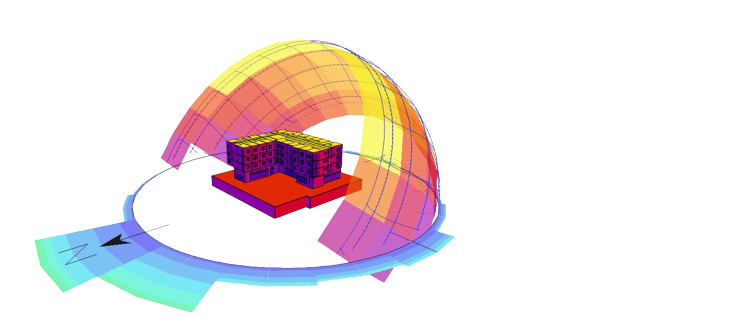
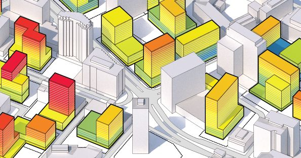

Resultados cuantificables
El modelado energético permite realizar simulaciones termodinámicas detalladas para obtener los datos completos de consumo en períodos por hora y día, aumentando la eficiencia y la probabilidad de retorno de inversión.

MODELADO Y SIMULACIÓN
- ¿Cómo se puede predecir el comportamiento energético de un proyecto, la eficiencia y el retorno de inversión de un sistema o equipo propuesto? Una de las herramientas más confiables y disponibles en el proceso de diseño es el modelado energético.
- Se trata de un modelo computacional de un edificio que incluye todos sus componentes: arquitectura, envolvente, ventilación y calefacción,; todo dentro de un entorno virtual que simula las condiciones geográficas y climáticas de la ubicación de un proyecto. En él, es posible integrar perfiles de ocupación de acuerdo con el tipo de uso del inmueble o espacio específico. Una vez que se termina con el proceso de diseño, es posible predecir el consumo energético general.

AUDITORÍA ENERGÉTICA
- Analizamos el consumo y determinamos el nivel de eficiencia de un sitio de producción o parte de él.
- Primera fase: Recopilar y analizar todos los datos provenientes del uso energético de los distintos vectores: electricidad, metano, oxígeno, entre otras.
- Segunda fase: Diseño del modelo energético de la empresa e identificación de qué sistemas de medida instalar y dónde.
Certificación ISO 50.001
- ISO 50001 es una normativa internacional desarrollada por ISO (Organización Internacional para la Estandarización u Organización Internacional de Normalización) que tiene como objetivo mantener y mejorar un sistema de gestión de energía en una organización
- Su propósito es el de permitirle una mejora continua de la eficiencia energética, la seguridad energética, la utilización de energía y el consumo energético con un enfoque sistemático. Este estándar apunta a permitir a las organizaciones mejorar continuamente la eficiencia, los costos relacionados con energía, y la emisión de gases de efecto invernadero.

GESTIÓN ENERGÉTICA
- Monitoriza los datos de consumo de energía en tiempo real, identifica ineficiencias y anomalías en el consumo.
- Análisis y previsiones avanzadas de consumo y costos a través de indicadores clave de rendimiento y algoritmos de inteligencia artificial.
- Optimización del consumo, ahorro energético garantizado y monitorización continua del desempeño de los activos instalados.